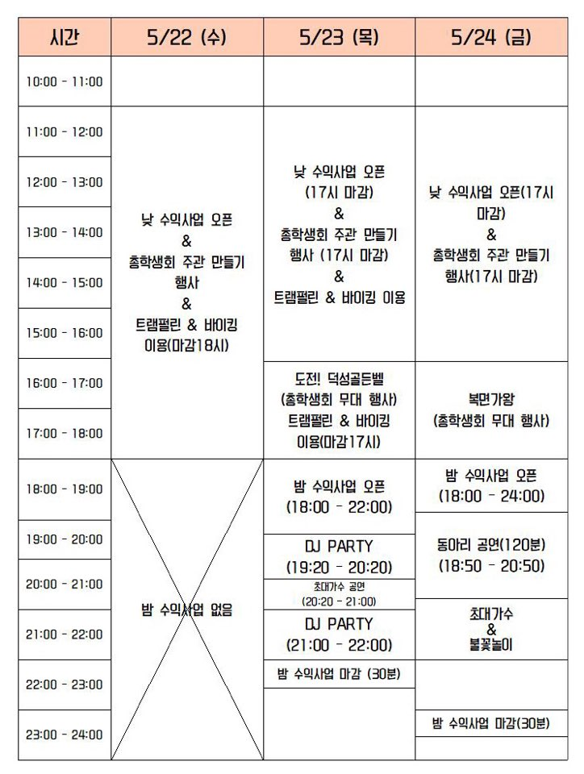

<!--템플릿 상속-->
{% extends 'base.html' %}
{% load static %}
{% block content %}

<style>
    body {background-color: #f5f5f5;}
    div#back {
    width:60em;
    padding: 1%;
    background-color: #ffffff;
    margin-top: 1%;
    margin-left:0.5em;
    margin-right:0.5em;
    box-shadow: 2px 2px 5px grey;
    align-content: center;
    }
    img{
        padding-left: 4em;
        padding-bottom: 2em;
        width: 55em;
        align-items: center;   
    }
</style>
<div id="back">
    
    
</div>
{% endblock %}